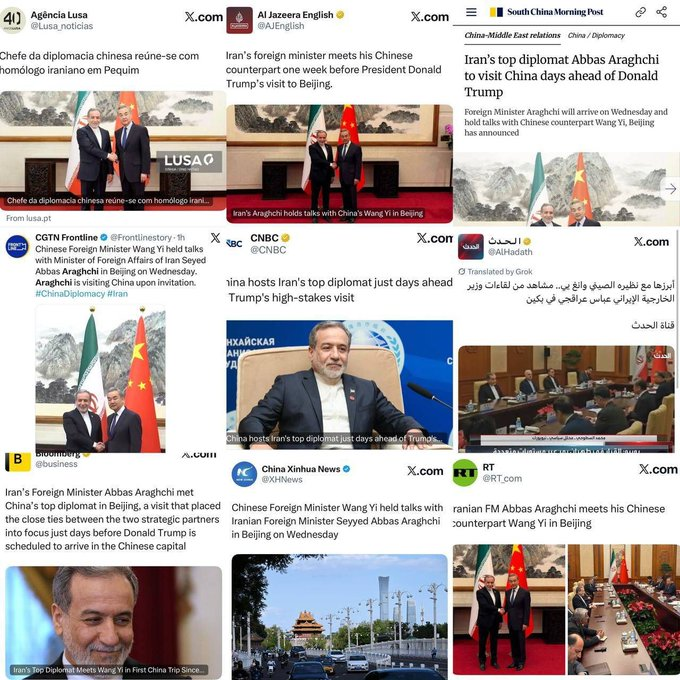
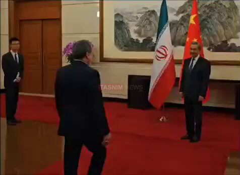
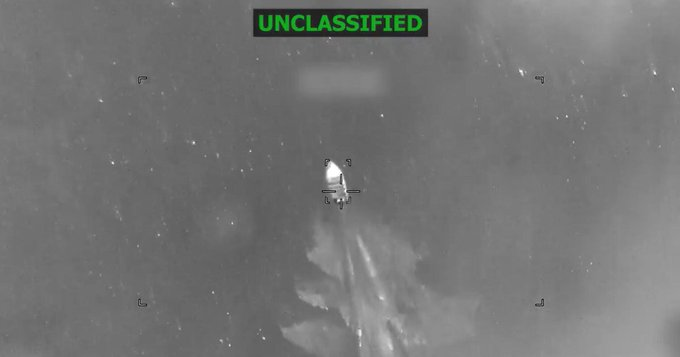
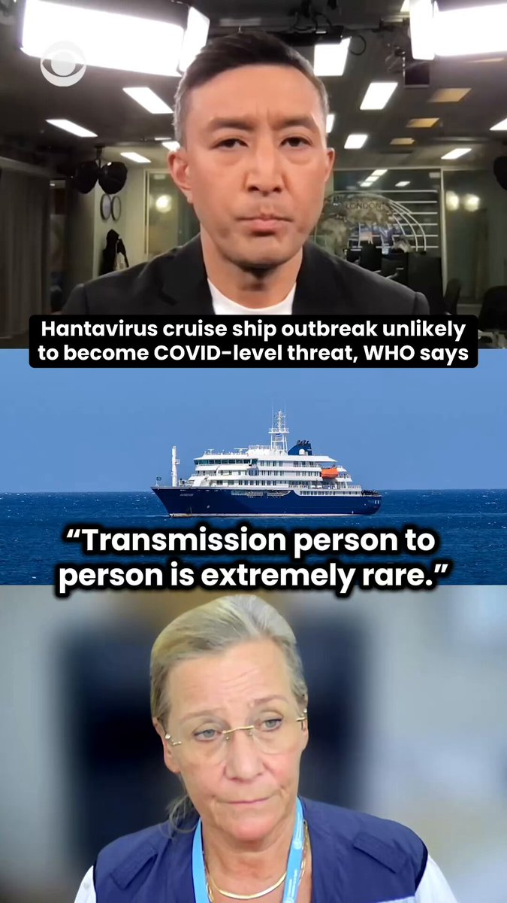
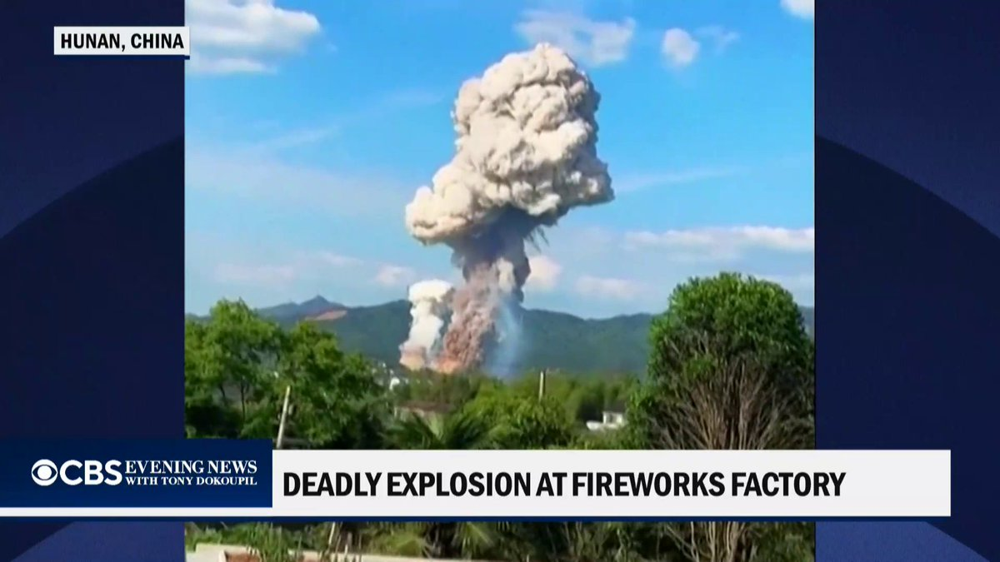

@CBSNews
📝 原文: Utz potato chips sold nationwide recalled over salmonella risk.
🇨🇳 译文: 因存在沙门氏菌风险，在全国范围内销售的 Utz 薯片被召回。

🕒 2026-05-06T06:00:00+00:00
| 来源 | 旧窗口内数量 | 本次新增 | 本次淘汰 | 当前窗口内共有 |
|---|---|---|---|---|
| 推文 + Dawn 新闻 | 0 | 30 | 0 | 30 |
| ARY News | 0 | 10 | 0 | 10 |
注：淘汰数 = 旧窗口内数量 + 本次新增 - 当前窗口内共有








